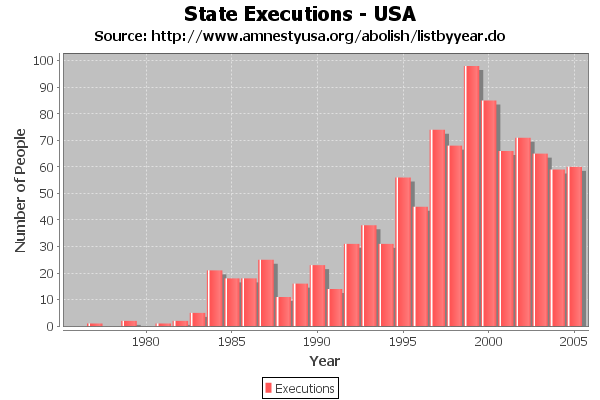

public class XYBarRenderer extends AbstractXYItemRenderer implements XYItemRenderer, Cloneable, PublicCloneable, Serializable
XYPlot (requires an
IntervalXYDataset). The example shown here is generated by the
XYBarChartDemo1.java program included in the JFreeChart
demo collection:

| Modifier and Type | Class and Description |
|---|---|
protected class |
XYBarRenderer.XYBarRendererState
The state class used by this renderer.
|
DEFAULT_ITEM_LABEL_INSETS, DEFAULT_OUTLINE_PAINT, DEFAULT_OUTLINE_STROKE, DEFAULT_PAINT, DEFAULT_SHAPE, DEFAULT_STROKE, DEFAULT_VALUE_LABEL_FONT, DEFAULT_VALUE_LABEL_PAINT, ZERO| Constructor and Description |
|---|
XYBarRenderer()
The default constructor.
|
XYBarRenderer(double margin)
Constructs a new renderer.
|
| Modifier and Type | Method and Description |
|---|---|
Object |
clone()
Returns a clone of the renderer.
|
void |
drawItem(Graphics2D g2,
XYItemRendererState state,
Rectangle2D dataArea,
PlotRenderingInfo info,
XYPlot plot,
ValueAxis domainAxis,
ValueAxis rangeAxis,
XYDataset dataset,
int series,
int item,
CrosshairState crosshairState,
int pass)
Draws the visual representation of a single data item.
|
protected void |
drawItemLabel(Graphics2D g,
XYDataset dataset,
int series,
int item,
XYPlot plot,
XYItemLabelGenerator generator,
Rectangle2D bar,
boolean negative)
Draws an item label.
|
boolean |
equals(Object obj)
Tests this renderer for equality with an arbitrary object.
|
Range |
findDomainBounds(XYDataset dataset)
Returns the lower and upper bounds (range) of the x-values in the
specified dataset.
|
Range |
findRangeBounds(XYDataset dataset)
Returns the lower and upper bounds (range) of the y-values in the
specified dataset.
|
double |
getBarAlignmentFactor()
Returns the bar alignment factor.
|
XYBarPainter |
getBarPainter()
Returns the bar painter.
|
double |
getBase()
Returns the base value for the bars.
|
static XYBarPainter |
getDefaultBarPainter()
Returns the default bar painter.
|
static boolean |
getDefaultShadowsVisible()
Returns the default value for the
shadowsVisible flag. |
GradientPaintTransformer |
getGradientPaintTransformer()
Returns the gradient paint transformer (an object used to transform
gradient paint objects to fit each bar).
|
Shape |
getLegendBar()
Returns the shape used to represent bars in each legend item.
|
LegendItem |
getLegendItem(int datasetIndex,
int series)
Returns a default legend item for the specified series.
|
double |
getMargin()
Returns the margin which is a percentage amount by which the bars are
trimmed.
|
Dimension |
getMinimumLabelSize()
Returns the minimum size for the bar to draw a label.
|
ItemLabelPosition |
getNegativeItemLabelPositionFallback()
Returns the fallback position for negative item labels that don't fit
within a bar.
|
ItemLabelPosition |
getPositiveItemLabelPositionFallback()
Returns the fallback position for positive item labels that don't fit
within a bar.
|
boolean |
getShadowsVisible()
Returns the flag that controls whether or not shadows are drawn for
the bars.
|
double |
getShadowXOffset()
Returns the shadow x-offset.
|
double |
getShadowYOffset()
Returns the shadow y-offset.
|
boolean |
getUseYInterval()
Returns a flag that determines whether the y-interval from the dataset is
used to calculate the length of each bar.
|
XYItemRendererState |
initialise(Graphics2D g2,
Rectangle2D dataArea,
XYPlot plot,
XYDataset dataset,
PlotRenderingInfo info)
Initialises the renderer and returns a state object that should be
passed to all subsequent calls to the drawItem() method.
|
boolean |
isDrawBarOutline()
Returns a flag that controls whether or not bar outlines are drawn.
|
boolean |
isShowLabelInsideVisibleBar()
Returns
true if the label should be aligned to the visible part
of the bar. |
void |
setBarAlignmentFactor(double factor)
Sets the bar alignment factor and sends a
RendererChangeEvent
to all registered listeners. |
void |
setBarPainter(XYBarPainter painter)
Sets the bar painter and sends a
RendererChangeEvent to all
registered listeners. |
void |
setBase(double base)
Sets the base value for the bars and sends a
RendererChangeEvent
to all registered listeners. |
static void |
setDefaultBarPainter(XYBarPainter painter)
Sets the default bar painter.
|
static void |
setDefaultShadowsVisible(boolean visible)
Sets the default value for the shadows visible flag.
|
void |
setDrawBarOutline(boolean draw)
Sets the flag that controls whether or not bar outlines are drawn and
sends a
RendererChangeEvent to all registered listeners. |
void |
setGradientPaintTransformer(GradientPaintTransformer transformer)
Sets the gradient paint transformer and sends a
RendererChangeEvent to all registered listeners. |
void |
setLegendBar(Shape bar)
Sets the shape used to represent bars in each legend item and sends a
RendererChangeEvent to all registered listeners. |
void |
setMargin(double margin)
Sets the percentage amount by which the bars are trimmed and sends a
RendererChangeEvent to all registered listeners. |
void |
setMinimumLabelSize(Dimension minimumLabelSize)
Sets the minimum size for the bar to draw a label.
|
void |
setNegativeItemLabelPositionFallback(ItemLabelPosition position)
Sets the fallback position for negative item labels that don't fit
within a bar, and sends a
RendererChangeEvent to all registered
listeners. |
void |
setPositiveItemLabelPositionFallback(ItemLabelPosition position)
Sets the fallback position for positive item labels that don't fit
within a bar, and sends a
RendererChangeEvent to all registered
listeners. |
void |
setShadowVisible(boolean visible)
Sets the flag that controls whether or not the renderer
draws shadows for the bars, and sends a
RendererChangeEvent to all registered listeners. |
void |
setShadowXOffset(double offset)
Sets the x-offset for the bar shadow and sends a
RendererChangeEvent to all registered listeners. |
void |
setShadowYOffset(double offset)
Sets the y-offset for the bar shadow and sends a
RendererChangeEvent to all registered listeners. |
void |
setShowLabelInsideVisibleBar(boolean showLabelInsideVisibleBar)
Sets whether the label should be aligned to the visible part of the
bar.
This setting has no effect when ItemLabelAnchor.isInternal()
returns false. |
void |
setUseYInterval(boolean use)
Sets the flag that determines whether the y-interval from the dataset is
used to calculate the length of each bar, and sends a
RendererChangeEvent to all registered listeners. |
addAnnotation, addAnnotation, addEntity, annotationChanged, beginElementGroup, calculateDomainMarkerTextAnchorPoint, drawAnnotations, drawDomainLine, drawDomainMarker, drawItemLabel, drawRangeLine, drawRangeMarker, fillDomainGridBand, fillRangeGridBand, findDomainBounds, findRangeBounds, getAnnotations, getDefaultItemLabelGenerator, getDefaultToolTipGenerator, getDrawingSupplier, getItemLabelGenerator, getLegendItemLabelGenerator, getLegendItems, getLegendItemToolTipGenerator, getLegendItemURLGenerator, getPassCount, getPlot, getSeriesItemLabelGenerator, getSeriesToolTipGenerator, getToolTipGenerator, getURLGenerator, hashCode, lineTo, moveTo, removeAnnotation, removeAnnotations, setDefaultItemLabelGenerator, setDefaultToolTipGenerator, setLegendItemLabelGenerator, setLegendItemToolTipGenerator, setLegendItemURLGenerator, setPlot, setSeriesItemLabelGenerator, setSeriesToolTipGenerator, setURLGenerator, updateCrosshairValuesaddChangeListener, beginElementGroup, calculateLabelAnchorPoint, clearLegendShapes, clearLegendTextFonts, clearLegendTextPaints, clearSeriesFillPaints, clearSeriesItemLabelFonts, clearSeriesItemLabelPaints, clearSeriesItemLabelsVisible, clearSeriesOutlinePaints, clearSeriesOutlineStrokes, clearSeriesPaints, clearSeriesPositiveItemLabelPositions, clearSeriesShapes, clearSeriesStrokes, clearSeriesVisible, clearSeriesVisibleInLegend, endElementGroup, fireChangeEvent, getAutoPopulateSeriesFillPaint, getAutoPopulateSeriesOutlinePaint, getAutoPopulateSeriesOutlineStroke, getAutoPopulateSeriesPaint, getAutoPopulateSeriesShape, getAutoPopulateSeriesStroke, getDataBoundsIncludesVisibleSeriesOnly, getDefaultCreateEntities, getDefaultEntityRadius, getDefaultFillPaint, getDefaultItemLabelFont, getDefaultItemLabelPaint, getDefaultItemLabelsVisible, getDefaultLegendShape, getDefaultLegendTextFont, getDefaultLegendTextPaint, getDefaultNegativeItemLabelPosition, getDefaultOutlinePaint, getDefaultOutlineStroke, getDefaultPaint, getDefaultPositiveItemLabelPosition, getDefaultSeriesVisible, getDefaultSeriesVisibleInLegend, getDefaultShape, getDefaultStroke, getItemCreateEntity, getItemFillPaint, getItemLabelAnchorOffset, getItemLabelFont, getItemLabelInsets, getItemLabelPaint, getItemOutlinePaint, getItemOutlineStroke, getItemPaint, getItemShape, getItemStroke, getItemVisible, getLegendShape, getLegendTextFont, getLegendTextPaint, getNegativeItemLabelPosition, getPositiveItemLabelPosition, getSeriesCreateEntities, getSeriesFillPaint, getSeriesItemLabelFont, getSeriesItemLabelPaint, getSeriesNegativeItemLabelPosition, getSeriesOutlinePaint, getSeriesOutlineStroke, getSeriesPaint, getSeriesPositiveItemLabelPosition, getSeriesShape, getSeriesStroke, getSeriesVisible, getSeriesVisibleInLegend, getTreatLegendShapeAsLine, hasListener, isComputeItemLabelContrastColor, isItemLabelVisible, isSeriesItemLabelsVisible, isSeriesVisible, isSeriesVisibleInLegend, lookupLegendShape, lookupLegendTextFont, lookupLegendTextPaint, lookupSeriesFillPaint, lookupSeriesOutlinePaint, lookupSeriesOutlineStroke, lookupSeriesPaint, lookupSeriesShape, lookupSeriesStroke, notifyListeners, removeChangeListener, setAutoPopulateSeriesFillPaint, setAutoPopulateSeriesOutlinePaint, setAutoPopulateSeriesOutlineStroke, setAutoPopulateSeriesPaint, setAutoPopulateSeriesShape, setAutoPopulateSeriesStroke, setComputeItemLabelContrastColor, setDataBoundsIncludesVisibleSeriesOnly, setDefaultCreateEntities, setDefaultCreateEntities, setDefaultEntityRadius, setDefaultFillPaint, setDefaultFillPaint, setDefaultItemLabelFont, setDefaultItemLabelFont, setDefaultItemLabelPaint, setDefaultItemLabelPaint, setDefaultItemLabelsVisible, setDefaultItemLabelsVisible, setDefaultLegendShape, setDefaultLegendTextFont, setDefaultLegendTextPaint, setDefaultNegativeItemLabelPosition, setDefaultNegativeItemLabelPosition, setDefaultOutlinePaint, setDefaultOutlinePaint, setDefaultOutlineStroke, setDefaultOutlineStroke, setDefaultPaint, setDefaultPaint, setDefaultPositiveItemLabelPosition, setDefaultPositiveItemLabelPosition, setDefaultSeriesVisible, setDefaultSeriesVisible, setDefaultSeriesVisibleInLegend, setDefaultSeriesVisibleInLegend, setDefaultShape, setDefaultShape, setDefaultStroke, setDefaultStroke, setItemLabelAnchorOffset, setItemLabelInsets, setLegendShape, setLegendTextFont, setLegendTextPaint, setSeriesCreateEntities, setSeriesCreateEntities, setSeriesFillPaint, setSeriesFillPaint, setSeriesItemLabelFont, setSeriesItemLabelFont, setSeriesItemLabelPaint, setSeriesItemLabelPaint, setSeriesItemLabelsVisible, setSeriesItemLabelsVisible, setSeriesItemLabelsVisible, setSeriesNegativeItemLabelPosition, setSeriesNegativeItemLabelPosition, setSeriesOutlinePaint, setSeriesOutlinePaint, setSeriesOutlineStroke, setSeriesOutlineStroke, setSeriesPaint, setSeriesPaint, setSeriesPositiveItemLabelPosition, setSeriesPositiveItemLabelPosition, setSeriesShape, setSeriesShape, setSeriesStroke, setSeriesStroke, setSeriesVisible, setSeriesVisible, setSeriesVisibleInLegend, setSeriesVisibleInLegend, setTreatLegendShapeAsLinefinalize, getClass, notify, notifyAll, toString, wait, wait, waitaddAnnotation, addAnnotation, addChangeListener, drawAnnotations, drawDomainLine, drawDomainMarker, drawRangeLine, drawRangeMarker, fillDomainGridBand, fillRangeGridBand, getAnnotations, getDefaultCreateEntities, getDefaultFillPaint, getDefaultItemLabelFont, getDefaultItemLabelGenerator, getDefaultItemLabelPaint, getDefaultItemLabelsVisible, getDefaultNegativeItemLabelPosition, getDefaultOutlinePaint, getDefaultOutlineStroke, getDefaultPaint, getDefaultPositiveItemLabelPosition, getDefaultSeriesVisible, getDefaultSeriesVisibleInLegend, getDefaultShape, getDefaultStroke, getDefaultToolTipGenerator, getItemCreateEntity, getItemFillPaint, getItemLabelFont, getItemLabelGenerator, getItemLabelPaint, getItemOutlinePaint, getItemOutlineStroke, getItemPaint, getItemShape, getItemStroke, getItemVisible, getLegendItemLabelGenerator, getNegativeItemLabelPosition, getPassCount, getPlot, getPositiveItemLabelPosition, getSeriesCreateEntities, getSeriesFillPaint, getSeriesItemLabelFont, getSeriesItemLabelGenerator, getSeriesItemLabelPaint, getSeriesNegativeItemLabelPosition, getSeriesOutlinePaint, getSeriesOutlineStroke, getSeriesPaint, getSeriesPositiveItemLabelPosition, getSeriesShape, getSeriesStroke, getSeriesToolTipGenerator, getSeriesVisible, getSeriesVisibleInLegend, getToolTipGenerator, getURLGenerator, isItemLabelVisible, isSeriesItemLabelsVisible, isSeriesVisible, isSeriesVisibleInLegend, removeAnnotation, removeAnnotations, removeChangeListener, setDefaultCreateEntities, setDefaultCreateEntities, setDefaultFillPaint, setDefaultFillPaint, setDefaultItemLabelFont, setDefaultItemLabelGenerator, setDefaultItemLabelPaint, setDefaultItemLabelsVisible, setDefaultItemLabelsVisible, setDefaultNegativeItemLabelPosition, setDefaultNegativeItemLabelPosition, setDefaultOutlinePaint, setDefaultOutlinePaint, setDefaultOutlineStroke, setDefaultOutlineStroke, setDefaultPaint, setDefaultPaint, setDefaultPositiveItemLabelPosition, setDefaultPositiveItemLabelPosition, setDefaultSeriesVisible, setDefaultSeriesVisible, setDefaultSeriesVisibleInLegend, setDefaultSeriesVisibleInLegend, setDefaultShape, setDefaultShape, setDefaultStroke, setDefaultStroke, setDefaultToolTipGenerator, setLegendItemLabelGenerator, setPlot, setSeriesCreateEntities, setSeriesCreateEntities, setSeriesFillPaint, setSeriesFillPaint, setSeriesItemLabelFont, setSeriesItemLabelGenerator, setSeriesItemLabelPaint, setSeriesItemLabelsVisible, setSeriesItemLabelsVisible, setSeriesItemLabelsVisible, setSeriesNegativeItemLabelPosition, setSeriesNegativeItemLabelPosition, setSeriesOutlinePaint, setSeriesOutlinePaint, setSeriesOutlineStroke, setSeriesOutlineStroke, setSeriesPaint, setSeriesPaint, setSeriesPositiveItemLabelPosition, setSeriesPositiveItemLabelPosition, setSeriesShape, setSeriesShape, setSeriesStroke, setSeriesStroke, setSeriesToolTipGenerator, setSeriesVisible, setSeriesVisible, setSeriesVisibleInLegend, setSeriesVisibleInLegend, setURLGeneratorgetLegendItemspublic XYBarRenderer()
public XYBarRenderer(double margin)
margin - the percentage amount to trim from the width of each bar.public static XYBarPainter getDefaultBarPainter()
public static void setDefaultBarPainter(XYBarPainter painter)
painter - the painter (null not permitted).public static boolean getDefaultShadowsVisible()
shadowsVisible flag.setDefaultShadowsVisible(boolean)public static void setDefaultShadowsVisible(boolean visible)
visible - the new value for the default.getDefaultShadowsVisible()public double getBase()
setBase(double)public void setBase(double base)
RendererChangeEvent
to all registered listeners. The base value is not used if the dataset's
y-interval is being used to determine the bar length.base - the new base value.getBase(),
getUseYInterval()public boolean getUseYInterval()
setUseYInterval(boolean)public void setUseYInterval(boolean use)
RendererChangeEvent to all registered listeners.use - the flag.getUseYInterval()public double getMargin()
setMargin(double)public void setMargin(double margin)
RendererChangeEvent to all registered listeners.margin - the new margin.getMargin()public boolean isDrawBarOutline()
setDrawBarOutline(boolean)public void setDrawBarOutline(boolean draw)
RendererChangeEvent to all registered listeners.draw - the flag.isDrawBarOutline()public GradientPaintTransformer getGradientPaintTransformer()
null possible).setGradientPaintTransformer(GradientPaintTransformer)public void setGradientPaintTransformer(GradientPaintTransformer transformer)
RendererChangeEvent to all registered listeners.transformer - the transformer (null permitted).getGradientPaintTransformer()public Shape getLegendBar()
null).setLegendBar(Shape)public void setLegendBar(Shape bar)
RendererChangeEvent to all registered listeners.bar - the bar shape (null not permitted).getLegendBar()public ItemLabelPosition getPositiveItemLabelPositionFallback()
null possible).setPositiveItemLabelPositionFallback(ItemLabelPosition)public void setPositiveItemLabelPositionFallback(ItemLabelPosition position)
RendererChangeEvent to all registered
listeners.position - the position (null permitted).getPositiveItemLabelPositionFallback()public ItemLabelPosition getNegativeItemLabelPositionFallback()
null possible).setNegativeItemLabelPositionFallback(ItemLabelPosition)public void setNegativeItemLabelPositionFallback(ItemLabelPosition position)
RendererChangeEvent to all registered
listeners.position - the position (null permitted).getNegativeItemLabelPositionFallback()public XYBarPainter getBarPainter()
null).public void setBarPainter(XYBarPainter painter)
RendererChangeEvent to all
registered listeners.painter - the painter (null not permitted).public boolean getShadowsVisible()
public void setShadowVisible(boolean visible)
RendererChangeEvent to all registered listeners.visible - the new flag value.public double getShadowXOffset()
public void setShadowXOffset(double offset)
RendererChangeEvent to all registered listeners.offset - the offset.public double getShadowYOffset()
public void setShadowYOffset(double offset)
RendererChangeEvent to all registered listeners.offset - the offset.public double getBarAlignmentFactor()
public void setBarAlignmentFactor(double factor)
RendererChangeEvent
to all registered listeners. If the alignment factor is outside the
range 0.0 to 1.0, no alignment will be performed by the renderer.factor - the factor.public Dimension getMinimumLabelSize()
public void setMinimumLabelSize(Dimension minimumLabelSize)
minimumLabelSize - The sizepublic boolean isShowLabelInsideVisibleBar()
true if the label should be aligned to the visible part
of the bar.true if the label should be aligned to the visible part
of the bar.setShowLabelInsideVisibleBar(boolean)public void setShowLabelInsideVisibleBar(boolean showLabelInsideVisibleBar)
ItemLabelAnchor.isInternal()
returns false.showLabelInsideVisibleBar - true to align to the visible
part.public XYItemRendererState initialise(Graphics2D g2, Rectangle2D dataArea, XYPlot plot, XYDataset dataset, PlotRenderingInfo info)
initialise in interface XYItemRendererinitialise in class AbstractXYItemRendererg2 - the graphics device.dataArea - the area inside the axes.plot - the plot.dataset - the data.info - an optional info collection object to return data back to
the caller.public LegendItem getLegendItem(int datasetIndex, int series)
getLegendItem in interface XYItemRenderergetLegendItem in class AbstractXYItemRendererdatasetIndex - the dataset index (zero-based).series - the series index (zero-based).public void drawItem(Graphics2D g2, XYItemRendererState state, Rectangle2D dataArea, PlotRenderingInfo info, XYPlot plot, ValueAxis domainAxis, ValueAxis rangeAxis, XYDataset dataset, int series, int item, CrosshairState crosshairState, int pass)
drawItem in interface XYItemRendererg2 - the graphics device.state - the renderer state.dataArea - the area within which the plot is being drawn.info - collects information about the drawing.plot - the plot (can be used to obtain standard color
information etc).domainAxis - the domain axis.rangeAxis - the range axis.dataset - the dataset.series - the series index (zero-based).item - the item index (zero-based).crosshairState - crosshair information for the plot
(null permitted).pass - the pass index.protected void drawItemLabel(Graphics2D g, XYDataset dataset, int series, int item, XYPlot plot, XYItemLabelGenerator generator, Rectangle2D bar, boolean negative)
AbstractXYItemRenderer.drawItemLabel(Graphics2D, PlotOrientation, XYDataset, int, int,
double, double, boolean) so that the bar can be used to calculate the
label anchor point.g - the graphics device.dataset - the dataset.series - the series index.item - the item index.plot - the plot.generator - the label generator (null permitted, in
which case the method does nothing, just returns).bar - the bar.negative - a flag indicating a negative value.public Range findDomainBounds(XYDataset dataset)
findDomainBounds in interface XYItemRendererfindDomainBounds in class AbstractXYItemRendererdataset - the dataset (null permitted).null if the dataset is
null or empty).AbstractXYItemRenderer.findRangeBounds(XYDataset)public Range findRangeBounds(XYDataset dataset)
findRangeBounds in interface XYItemRendererfindRangeBounds in class AbstractXYItemRendererdataset - the dataset (null permitted).null if the dataset is
null or empty).AbstractXYItemRenderer.findDomainBounds(XYDataset)public Object clone() throws CloneNotSupportedException
clone in interface PublicCloneableclone in class AbstractXYItemRendererCloneNotSupportedException - if the renderer cannot be cloned.public boolean equals(Object obj)
equals in class AbstractXYItemRendererobj - the object to test against (null permitted).Copyright © 2001–2025 JFree.org. All rights reserved.